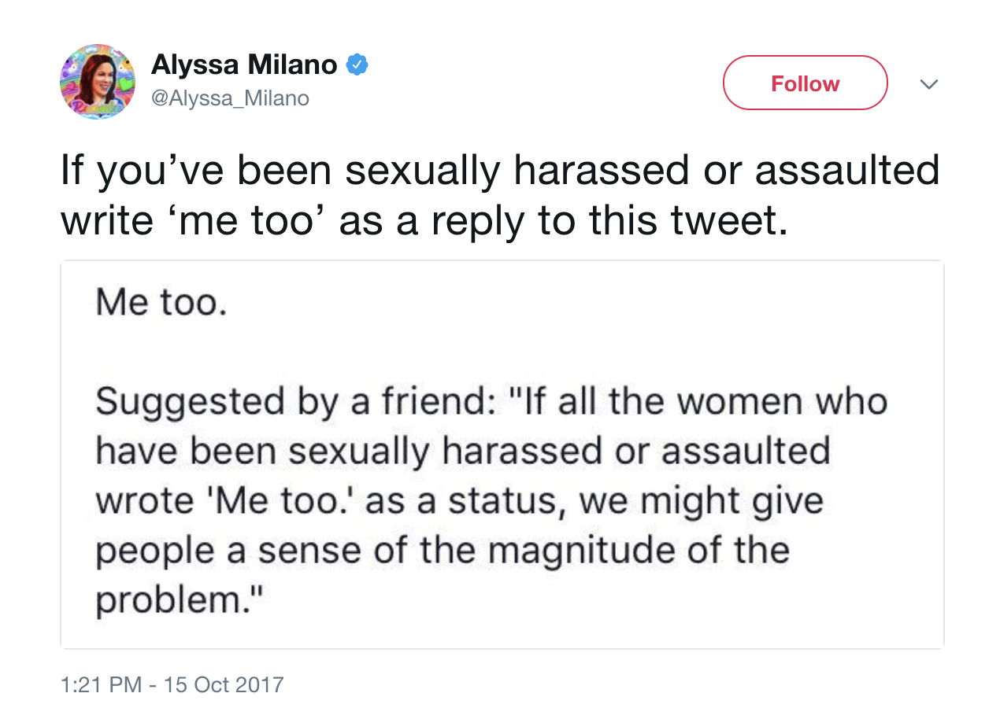

#Metoo
The 411
- One tweet created a call to action for victims of sexual assault and harassment.
- Twitter confirmed to CBS News that over 1.7 million tweets included the hashtag "#MeToo," with 85 countries that had at least 1,000 #MeToo tweets.
- Varying opinions on the impact of the movement developed--some believed it was harmful in the ways it framed sexual assault.
Who?
Twitter, Facebook, and other social media users posted “Me too” as their status if they identified as someone who has experienced sexual assault or harassment. This was originally restricted to women but quickly expanded to include any victim.
What?
The post spread like wildfire with users from all over the world. Twitter confirmed to CBS News that over 1.7 million tweets included the hashtag "#MeToo," with 85 countries that had at least 1,000 #MeToo tweets.
Why?
The status was initially created to spread awareness about the number of people who have experienced sexual harassment and assault, but social media users became concerned about potential triggers, the message that was being sent by bringing awareness to the victims rather than the perpetrators, and recognizing that the users of the status were not the only people who had these experiences.
Wanna learn more?